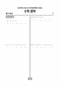

문제지


시험지를 먼저 풀어 보세요. 등급컷·표준점수·난이도는 흐리게 가려 뒀어요.
| 등급 | 원점수 | 표준점수 | 백분위 |
|---|---|---|---|
| 1 | 76 | 138 | 96 |
| 2 | 65 | 128 | 88 |
| 3 | 54 | 118 | 77 |
| 4 | 35 | 103 | 59 |
| 5 | 19 | 89 | 39 |
| 6 | 12 | 81 | 21 |
| 7 | 10 | 79 | 12 |
| 8 | 5 | 75 | 4 |
등급별 컷 · 입시기관 2곳 원점수 추정 종합(이투스·종로학원) · 공통+선택 점수 조합에 따라 다를 수 있음 · 만점 100점
| 등급 | 표준점수 이상 | 인원(명) | 비율 |
|---|---|---|---|
| 1 | 138 | 11,800 | 4.12589% |
| 2 | 128 | 22,375 | 7.82345% |
| 3 | 118 | 33,303 | 11.6444% |
| 4 | 103 | 50,492 | 17.6546% |
| 5 | 89 | 56,351 | 19.7032% |
| 6 | 81 | 55,854 | 19.5294% |
| 7 | 79 | 25,394 | 8.87905% |
| 8 | 75 | 20,625 | 7.21156% |
| 9 | 66 | 9,805 | 3.42833% |
수학 영역 전체 응시자 기준이에요.
출처: 시·도교육청이 공개한 전국연합학력평가 성적 분석·통계자료(공개 자료 보기).
발행 기관: 시·도교육청(전국연합학력평가). 파일 위치: 이 사이트가 보관한 사본. 저작권은 발행 기관에 있습니다. 원본과 다르거나 게시 중단이 필요하면 연락처로 알려 주세요. 등급컷 출처 구분은 데이터 원칙에서 설명합니다.
막대 색은 역대 대비 난이도 · 진한 막대가 이 시험 · 막대를 누르면 그 회차로 이동
| 회차 | 1등급컷 | 표점 최고 | 1등급 표점 | 난이도 |
|---|---|---|---|---|
| 4월 학평2022년 고3이 시험 | 76 | 160 | 138 | 매우 어려움 |
| 3월 학평2022년 고3 | 75 | 165 | 141 | 매우 어려움 |
| 10월 학평2021년 고3 | 79 | 163 | 140 | 매우 어려움 |
| 7월 학평2021년 고3 | 88 | 144 | 135 | 쉬움 |
| 4월 학평2021년 고3 | 84 | 147 | 133 | 매우 쉬움 |
| 3월 학평2021년 고3 | 88 | 157 | 139 | 매우 쉬움 |